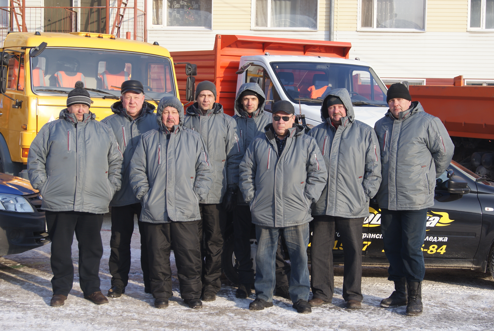

ПРЕЙСКУРАНТ ЦЕН НА ДОПОЛНИТЕЛЬНЫЕ ОБРАЗОВАТЕЛЬНЫЕ УСЛУГИ МНОГОФУНКЦИОНАЛЬНОГО ЦЕНТРА ПРИКЛАДНЫХ КВАЛИФИКАЦИЙ
| ФИО | Категория | Стаж работы/ Водительский стаж | ||
|
Кукса Сергей Иванович |
Категория «B», «M» |
Работает с 2015 года. Водительский стаж с 1985 года |
||
|
Ложников Сергей Васильевич |
Категория «B», «C», «D» |
Работает с 2009 года. Водительский стаж с 1999 года |
||
|
Милимко Евгений Владимирович |
Категория «B», «C», «D», «E» |
Работает с 2012 года. Водительский стаж с 1998 года |
||
|
Назарин Константин Геннадьевич |
Категория «B», «C» |
Работает с 2014 года. Водительский стаж с 1988 года |
||
|
Онищенко Станислав Александрович |
Категория «B», «C», «D», «E» |
Работает с 2012 года. Водительский стаж с 1988 года |
||
|
Яншин Шарафитдин Александрович |
Категория «B», «C», «D», «E» |
Работает с 2015 года. Водительский стаж с 1984 года |
||
|
Долгополов Виктор Николаевич |
Категория «C» |
Работает с 2016 года. Водительский стаж с 2006 года |
||
|
Гаврюшин Александр Николаевич |
Категория «A», «B», «C», «D», «E» |
Работает с 2020 года. Водительский стаж с 1991 года |
||
|
Бейскенов Кайрат Муратбекович |
Работает с 2021 года. |
